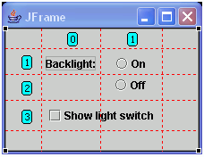

You can use the AWT GridBagLayout with Swing and AWT containers to arrange components using a powerful and flexible grid arrangement.
The GridBagLayout layout manager arranges its components in rows and columns. The GridBagConstraints object contains information about the row and column where a component is placed, the number of cells the component should span, and how the component should be sized and positioned within the cell.
The visual editor uses red, dotted lines to indicate the current borders of the grid. The column and row numbers are also labeled. The rows and columns begin their numbering with 0. So, the upper left corner cell is labeled originally as 0,0. As you add components, the rows and columns are numbered sequentially based on the previously used number.

To specify how the grid displays, see Specifying grid display preferences for containers.